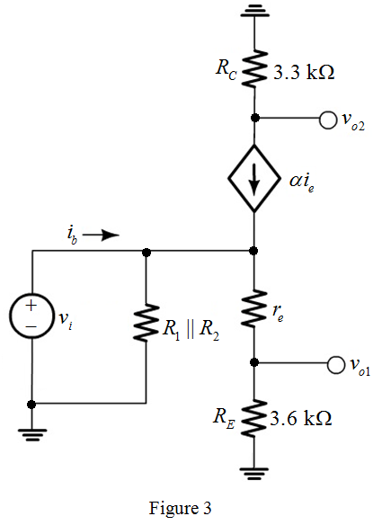

Consider the value of  is very large.
is very large.
Determine the value of collector current.
Determine the value of emitter current.
Substitute  for
for  in the equation.
in the equation.
Refer to Figure P6.107 in the text book.
The DC analysis equivalent circuit of Figure P6.107 is shown in Figure 1.
Determine the value of Thevenin’s voltage.
Determine the value of Thevenin’s resistance.
The simplified circuit diagram is shown in Figure 2.
Consider the value of is very large.
Determine the value of collector current.
Determine the value of emitter current.
Substitute for in the equation.

Substitute  for
for  and
and  for
for  in the equation.
in the equation.
Thus, the value of collector bias current,  is .
is .
Draw the small-signal equivalent circuit diagram.

Apply voltage divider rule, to determine the voltage across resistor,  .
.

Thus, the expression for voltage gain,  is.
is.
The current flowing through the emitter resistor is,
Apply Kirchhoff’s current Law at  in Figure 3.
in Figure 3.

Substitute for  in the equation.
in the equation.
Derive the expression for voltage gain.
Substitute for in the equation.
Thus, the expression for voltage gain,  is .
is .
 .
. 
Substitute  for
for  and for
and for  in the equation.
in the equation.
Determine the value of voltage gain,  .
.
Substitute  for
for  and
and  for
for  in the equation.
in the equation.
Thus, the value of voltage gain, is.
Determine the value of voltage gain,  .
.
Substitute for , for
, for  , 1 for
, 1 for  and for
and for  in the equation.
in the equation.
Thus, the value of voltage gain,  is.
is.
The circuit diagram with  is grounded in Figure 3 is shown in Figure 4
is grounded in Figure 3 is shown in Figure 4
The current flowing through the emitter resistor is,
Apply Kirchhoff’s current Law at  in Figure 4.
in Figure 4.

Substitute for  in the equation.
in the equation.
Thus, the expression for voltage gain when is connected to ground, is .
is connected to ground, is .